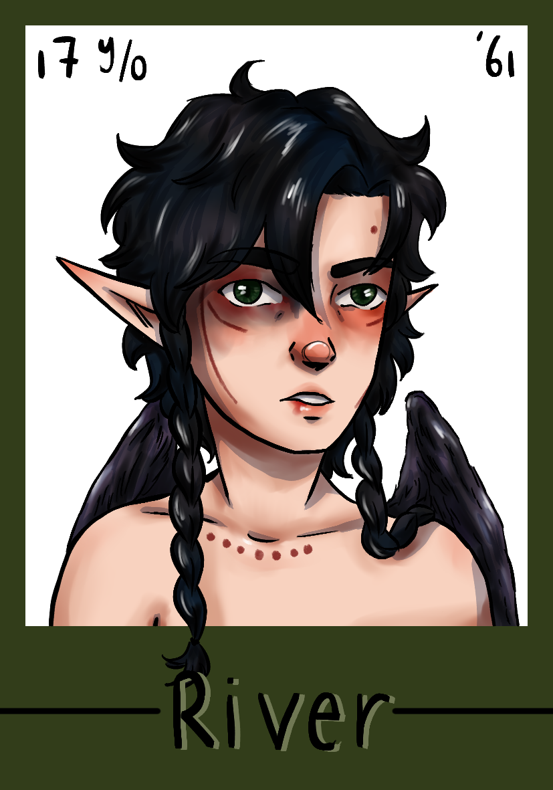
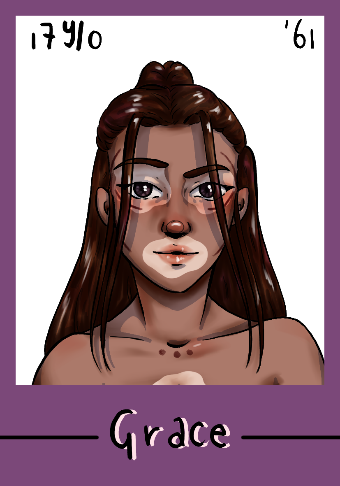
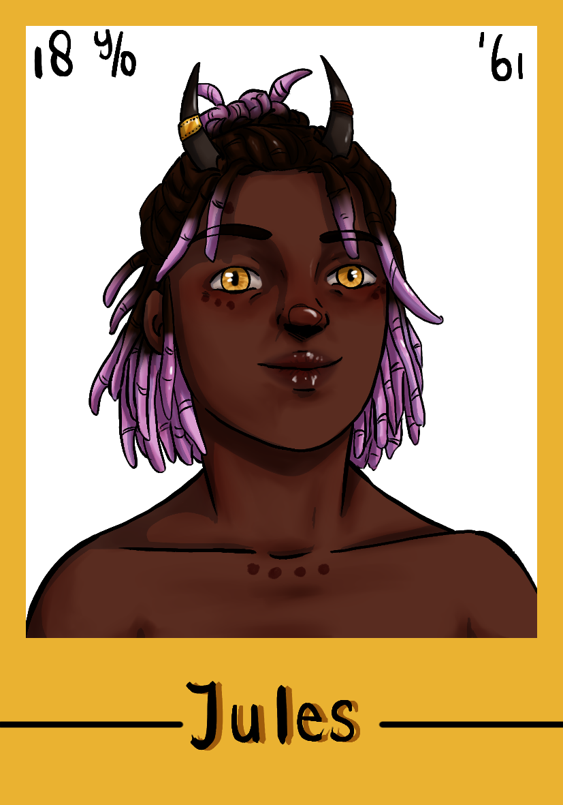
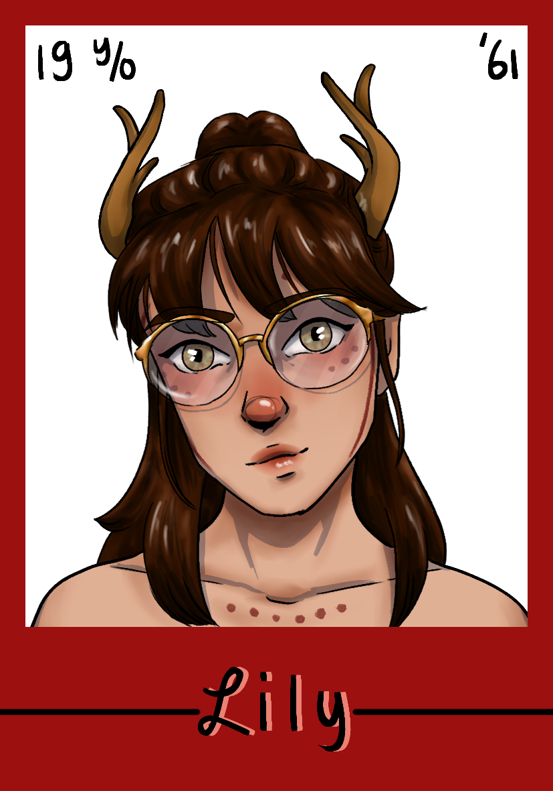

A summary of the most important characters in Unsung Stars!

She/Her, 17 years oldRiver is a loyal friend to Grace and Jules. She was rescued from a mysterious criminal organisation by the Council when she was young. The Council now want her work for them, which River is working to prevent. |

She/Her, 17 years oldGrace is famous as a femme fatale kind of girl, she is a ballet dancer. After the summer, she will start Echo training, something that was controversial with the public. Everything in her life is in name of achieving her dream, she needs the public's favour to be able to do it. |

They/Them, 18 years oldJules is a cheerful person, they became famous for singing and acting, at a young age. They're taking a year off after the summer, to prepare to study medicine and look into their mother's mysterious illness. |

She/Her, 19 years oldLily is River's recent girlfriend, to the dismay of Grace. She's the youngest daughter of Councillor Romano, who wants her to become part of the family business. She wants to be independent from her family. |